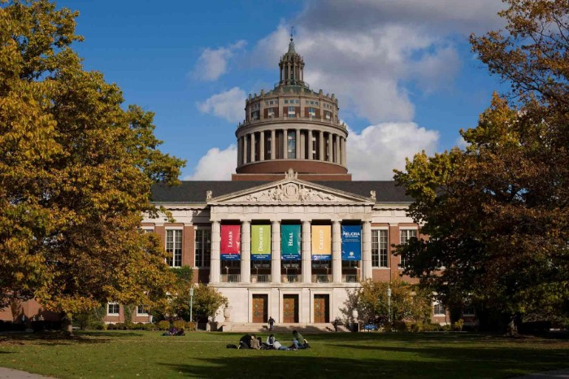

Winnie Wan

Hi, I’m Winnie, a rising junior at the University of Rochester studying Computer Science and Psychology. As a software developer, I am constantly learning new skills and working on side projects. Besides the technical side of my life, there are many hobbies that I love like playing games and baking. Especially during this time, I am picking up new hobbies like planting and dancing! Most importantly, I am a guinea pig mom! Learn more about me by exploring this website that I’ve created as Project 1 of my 2020 Google’s STEP Internship :)
New York City

I was born and raised in New York City, the city that never sleeps. Although many believe that NYC is an expensive city to live in, I grew up in a lower income neighborhood. This type of population may not be represented in TV shows or movies, but it’s what I love about the city - the people ... and the food!
Rochester, NY
I’ve chosen the University of Rochester for college because it’s 7 hours away from home. Since university is a 4 year experience, I would want to spend those years with a traditional experience, where there is a big campus and a dormitory life. Also, they’ve given me a large financial aid package haha :) But student loans are still tough.
Google STEP Internship

This is where I am right now! I am currently interning at Google as a STEP intern. STEP is the Student Training in Engineering Program. This is a 12 week program that offers students the opportunity to work on a software project alongside 2 other STEP interns, with the support of full-time Googlers and a mentor. Due to the 2020 pandemic, there have been some changes, but overall it has the same goal - prepare us to become future software engineers!